Établissement de référence fondé en [2001], le SAMIS-ESIC s'impose comme le pôle d'excellence en Sciences de la Communication au cœur d'Antananarivo.
📍 Dans l'enceinte de Saint Michel Amparibe
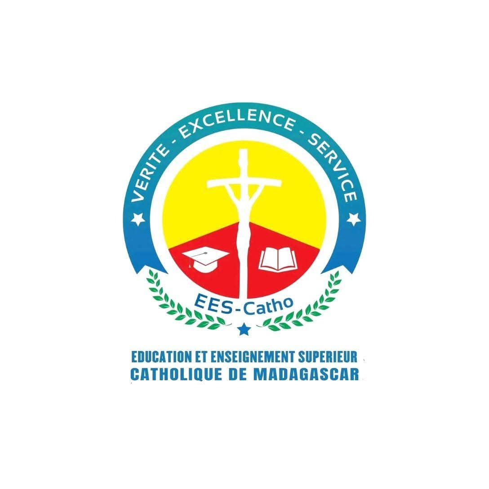
Institution de référence
Education et Enseignement Supérieur Catholique de Madagascar regroupe les instituts supérieurs catholiques de Madagascar
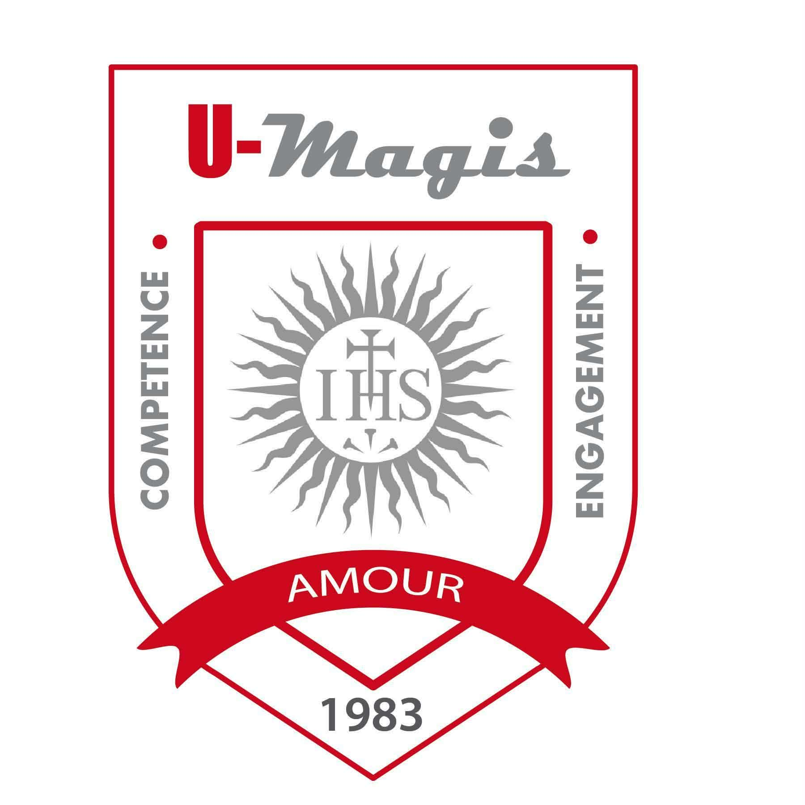
Institution de référence
Membre du réseau mondial des universités de Loyola, l'UMAGIS s'inscrit dans la tradition éducative jésuite.
L'Atelier de Production est un mini-stage interne organisé chaque année. L'édition 2026 a pour thème : "Jeunes, savoir et transformations sociales à Madagascar".
Cet atelier vise à renforcer les compétences de chaque étudiant tout en leur offrant l'opportunité d'évoluer dans un environnement professionnel.
Maîtrisez l'art de l'animation en studio et la production audiovisuelle.
Devenez le pilier stratégique de l'image institutionnelle.
Engagez-vous dans le changement social et les projets humains.
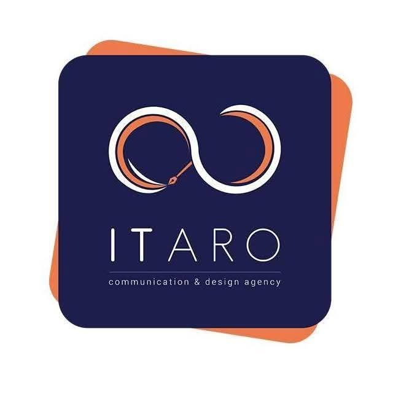
Le département multimédia est un véritable atelier de création au sein de SAMIS-ESIC. Il permet aux étudiants de transformer des idées en projets concrets : conception de supports imprimés, développement de sites web et réalisation de vidéos corporate. Chaque projet offre l’occasion d’expérimenter différentes techniques, de développer une sensibilité visuelle et de se préparer aux exigences réelles du monde de la communication. La créativité et l’innovation sont au cœur des activités, tout en mettant l’accent sur des compétences pratiques et professionnelles.
Lors de l'atelier de production, le département TAF'ITA est responsable de la production du journal de l’U-Magis.Chaque jour, les étudiants rédigent des articles pour constituer un journal structuré en différentes rubriques : Culture, Économie, Jeunes, Politique, Sport et Social. Les chefs de département encadrent les étudiants et s’assurent que chaque publication soit claire, intéressante et bien organisée, tout en offrant aux participants une expérience pratique dans le journalisme et la rédaction professionnelle.
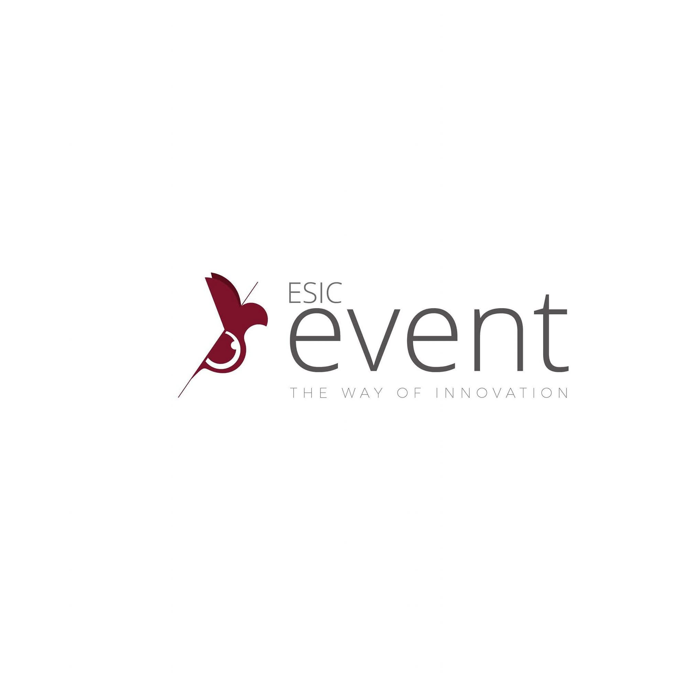
L'ESIC EVENT se charge de l’organisation de tous les événements à l’U-Magis pendant l’Atelier de production. Le département planifie les activités, coordonne les participants et assure l’animation des différentes sessions. L’objectif est de dynamiser la vie de l’institut, de créer des moments d’échange et de collaboration entre les étudiants, tout en développant leur sens de l’organisation et leur capacité à gérer des projets événementiels.
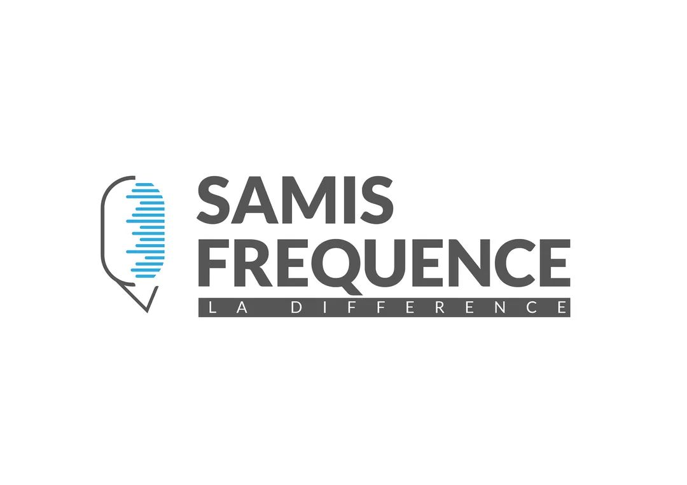
Le département de la radio offre aux étudiants une formation pratique à travers la réalisation d’émissions en direct sur la station SAMIS Fréquence 105.8 FM, au sein de l’Université SAMIS-ESIC. Dans ce cadre, les étudiants produisent et animent des programmes radiophoniques, en développant leurs compétences en communication, en animation et en production. Ils ont également l’opportunité d’inviter des animateurs et des artistes, favorisant ainsi les échanges et l’enrichissement de leurs expériences professionnelles.
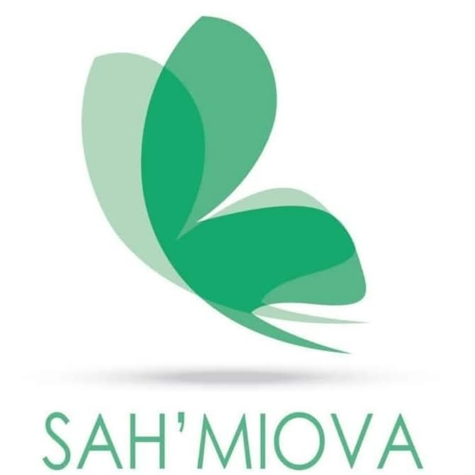
Les étudiants de ce département s’engagent activement dans des actions sociales. Ils mènent des activités de sensibilisation sur le terrain afin d’informer et d’accompagner les communautés. Leur objectif est de faire en sorte que leurs initiatives aient un impact concret et durable sur l’amélioration des conditions de vie des populations. Pour cette année, leur slogan est : « HARENA ny fahasamihafana, Hajaiko ny Hafa ». .
L'ESIC TV constitue la plateforme de diffusion des productions audiovisuelles réalisées par les étudiants. L’ensemble des contenus est diffusé sur la chaîne ESIC TV, accessible via la télévision de l’U-Magis à Amparibe. Ce département est structuré en six services principaux : Film court, Séquence privée, Talk-show, Documentaire, Clip, Publicité et Journal télévisé et entièrement réalisés par les étudiants dans le cadre de leur formation. ESIC TV assure également la diffusion des productions issues des différents départements, avec une présentation assurée par des animateurs.
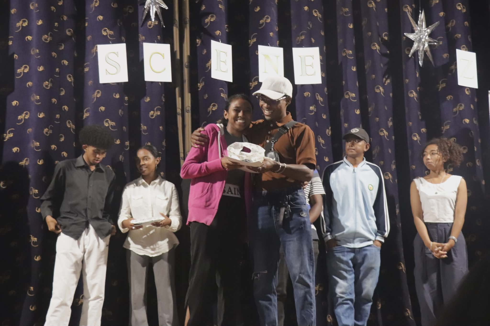
Grace à sa passion, na THYA ou RAFANOMEZANTSOA Kantoniaina Nathya a gagné au concours SLAM
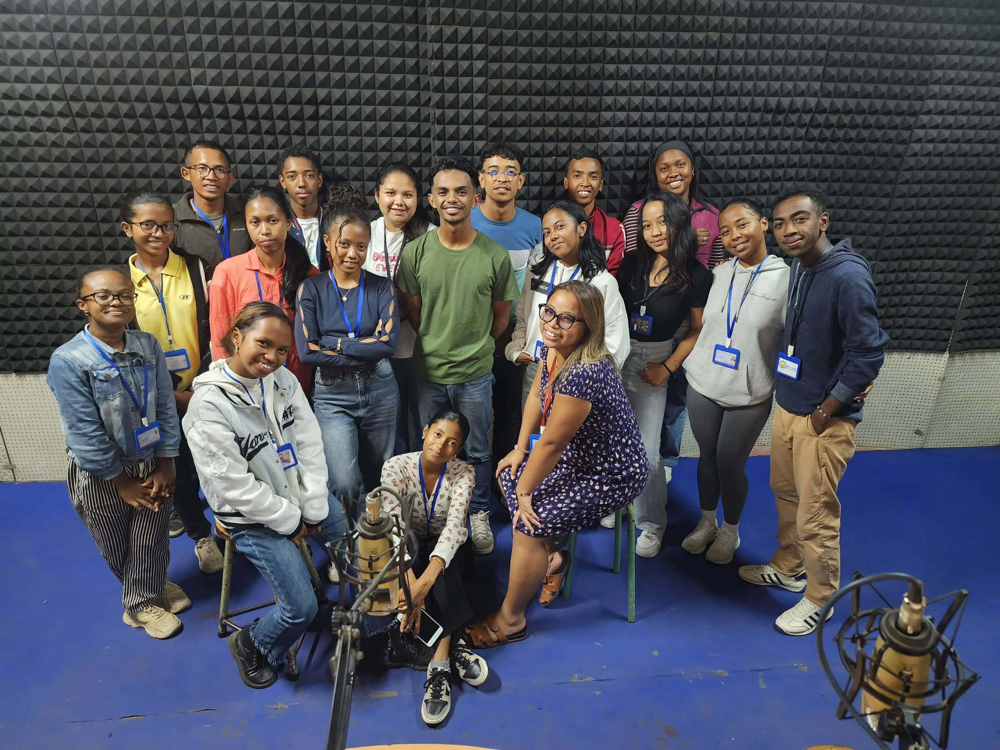
Photo de groupe des membres de SAMIS Fréquence après une émission.
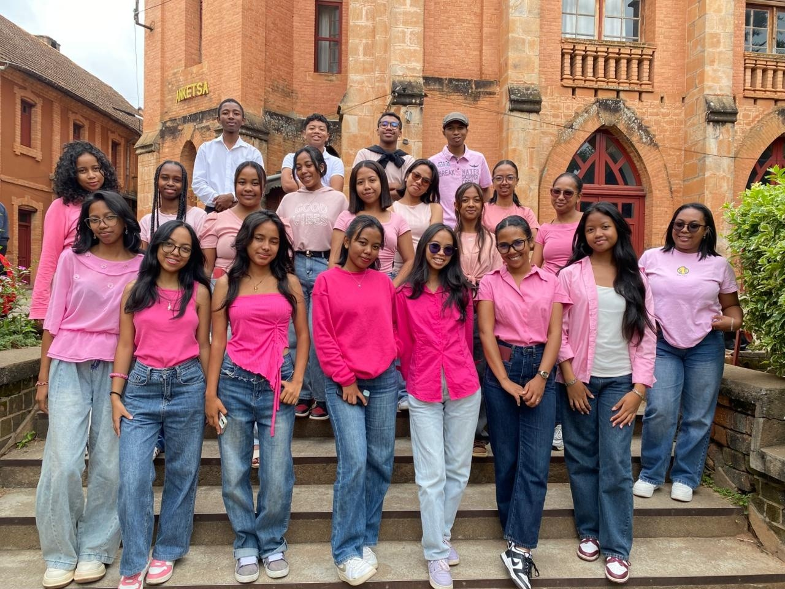
Photo de groupe réunissant les journalistes, tous habillés en rose,immortilisant ce moment de collaboration et de convivialité.
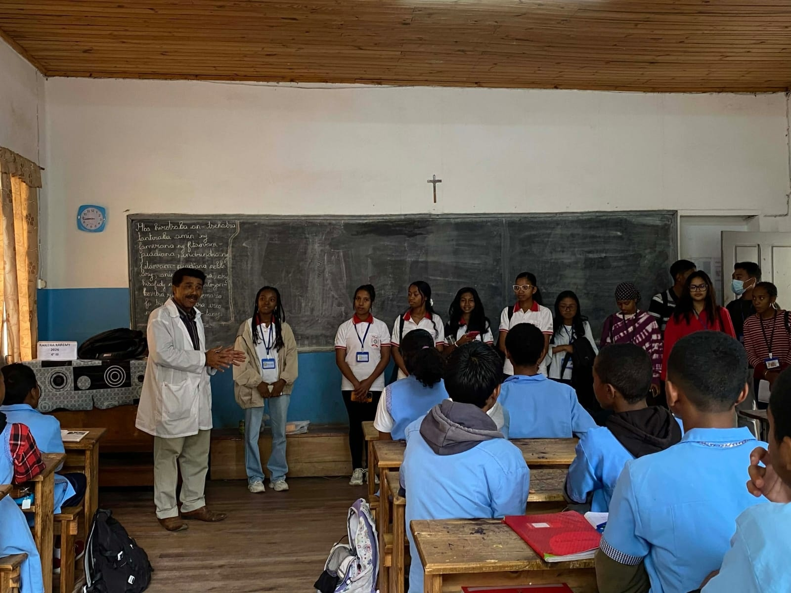
Photo illustrant la descente sur terrain des membres du département SAH MIOVA, menant une action de sensibilisation au sein du collège Saint Joseph Mahamasina
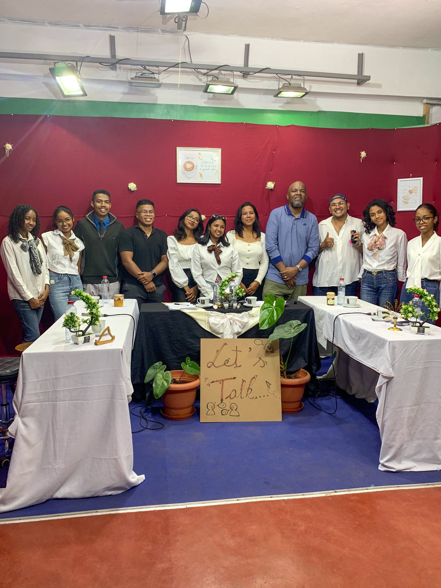
Moment capturé avec l'équipe de l'ESIC TV et leurs invités à la fin du talk-show.
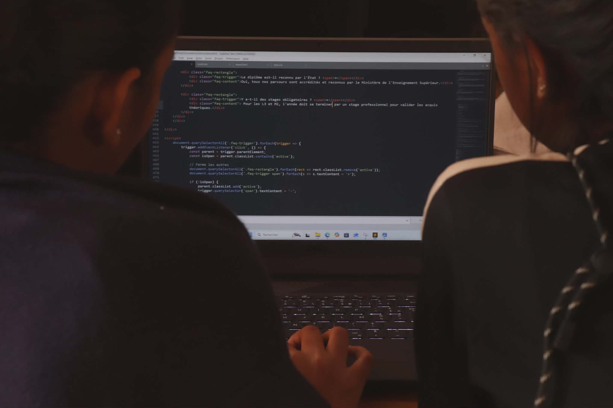
Finition du site par le service Web
Maîtrisez les techniques du journalisme et de la production audiovisuelle.
Engagez-vous dans le changement social et le développement communautaire.
Devenez expert en stratégie d'image de marque et communication interne.
Au SAMIS-ESIC, nous croyons que la théorie ne suffit pas à forger les leaders de demain. C’est pourquoi nous mettons l’accent sur un apprentissage ancré dans la pratique réelle. À travers nos studios, nos projets collaboratifs et nos immersions professionnelles, chaque étudiant apprend en faisant, transformant ainsi ses connaissances en une véritable expertise de terrain.